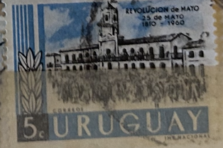
| SOURCE | TITLE| IMAGE MATCH | click to source page |
| eBay | Vintage Stamp lot of 10+, Uruguay, 1950s, 1960s, Revolucion de Mayo, Ordonez | eBay | 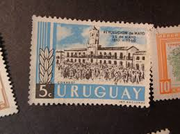 |
| eBay | 1960 Uruguay SC# 659 - F - Revolutionists and Cabildo, Buenos Aires - Used | eBay | 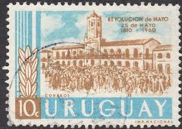 |
| eBay | 1960 URUGUAY LATIN AMERICA SET REVOLUTION VF MNH | eBay | 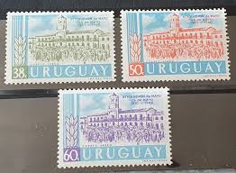 |
| Todocolección | uruguay - 5 centésimos - año 1898 - Compra venta en todocoleccion | 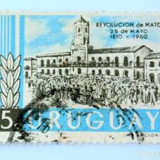 |
| Free stamp catalogue | Stamps from Uruguay - Freestampcatalogue.com - The free online stampcatalogue with over 500.000 stamps listed. | 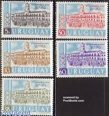 |
| eBay | Cats Uruguayan Stamps for sale | eBay | 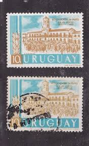 |
| eBay | URUGUAY 38c - 1810 - 1960 REVOLUCION DE MAYO - BLOCK OF 4 - MNH | eBay | 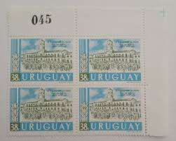 |
| eBay | URUGUAY - 1960 - REVOLUCION DE MAYO - 50c - B Of 4 - MNH | eBay | 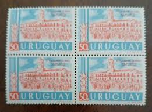 |
| eBay | ARGENTINA PHILATELIC EXPOSISION 1960 SET OF 2 FDC FIRST DAY COVER | eBay | 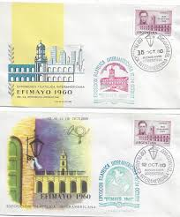 |
| eBay | Peru Architecture Lima stamp 1946 AMR | eBay | 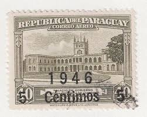 |
| eBay | Multi-Color Radio Latin American Stamps for sale | eBay | 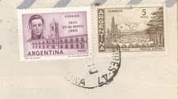 |
| Mercari | ST-798) Stamp: 1949 Uruguay, Scott #c142 | Mercari | 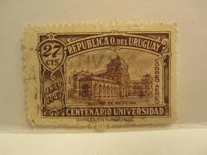 |
| Todocolección | españa 1974 edifil 2214 sello º hispanidad arge - Buy Used stamps of the Second Centenary on todocoleccion | 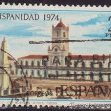 |
| Dreamstime.com | Postage Stam Stock Photos - Free & Royalty-Free Stock Photos from Dreamstime | 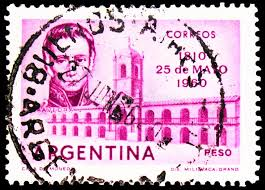 |
| eBay | Paraguay Airmail Stamp, 1946, sc#C156, Mint, VLH, OG | eBay | 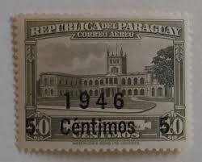 |
| eBay | ARGENTINA $5 PESOS P.275a (AU) FROM 1960-62 | eBay | 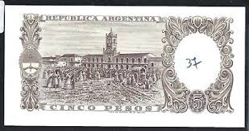 |
| Stamp Community Forum | Paraguay - Similar To Type A37 But Without 1904 Date. - Stamp Community Forum | 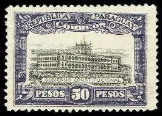 |
| Luciana Ereñu (lucianae87) – Profile | Pinterest | ||
| Etsy | ARGENTINA - Etsy | 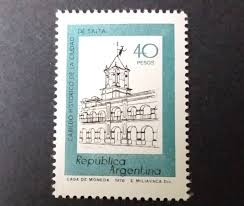 |
| Spreaker | El 25 de Mayo | 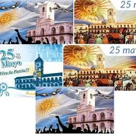 |
| Dreamstime.com | Postal Stam Stock Photos - Free & Royalty-Free Stock Photos from Dreamstime | 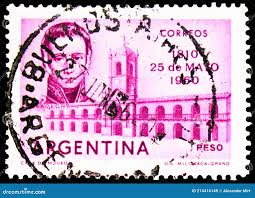 |
| OverDrive | Argentina nuestra historia - Richmond Public Library - OverDrive | 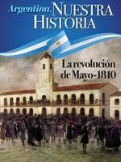 |
| Post Road Company | Collectible Stamp Uruguay Scott C103, Year 1939 | 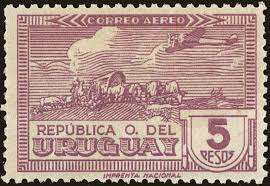 |
| terada77.com | URUGUAY | 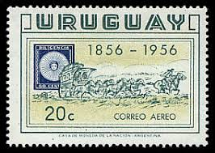 |
| eBay | Paraguay - 1982 - 5000 Guranies - "aUNC+" #CO7254 | eBay | 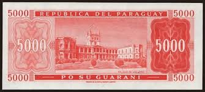 |
| eBay | Paraguay Stamps # C156 VF OG LH Double Overprint | eBay | 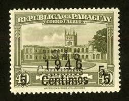 |
| eBay | Argentina Proof Pet Air #67 Block x 4 On Paper Colour Not Approved | eBay | 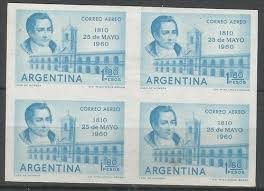 |
| Maria Victoria (mariavictoriamanzioni) – Profile | Pinterest | 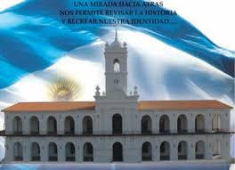 | |
| eBay | CM) 1957. ARGENTINA. FDC. 150TH ANNIVERSARY OF THE DEFENSE OF BUENOS AIRES. STAM | eBay | 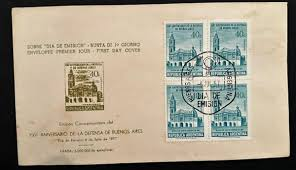 |
| eBay | 864226) Architecture, Miscellaneous, Uruguay | eBay | 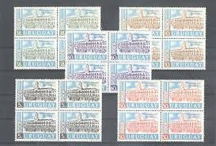 |
| Wikimedia.org | File:Charles Henri Pellegrini - Plaza de la Victoria (frente al norte 1829).jpg - Wikimedia Commons | 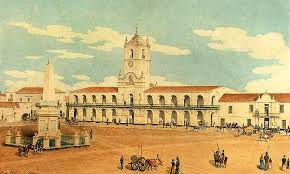 |
| eBay | 2005 Paraguay 5000 Guaranies P-223 UNC NEW Banknote | eBay | 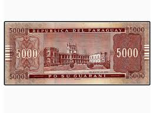 |
| Maria Victoria Gaia (mariavictoriagaia) – Profile | Pinterest | 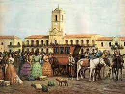 | |
| Genially | La Revolución De Mayo | Genially | |
| eBay | Uruguay 1956, 100 years Anniversary Postage stamp MNH, Mi 798-800 | eBay | 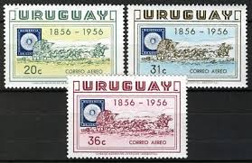 |
| Alamy | ARGENTINA - CIRCA 1978: a stamp printed in the Argentina shows Chapel of Rio Grande Museum, Tierra del Fuego, Argentina, circa 1978 Stock Photo - Alamy | 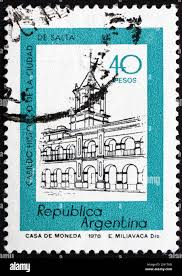 |
| Wayground | Educación Colonial en Panama Quiz | 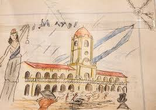 |
| eBay | Argentina Stamps XF Proof Pair | eBay | 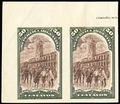 |
| eBay.de | 1904, Paraguay, V P, (*) - 1740641 | eBay.de | 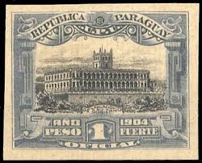 |
| eBay | ARGENTINA 4 BANKNOTES 1960 5 PESOS Pick 275a Bottero 1919 UNC Consecutive Numb. | eBay | 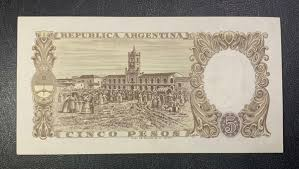 |
| eBay | Postal History Argentina FDC #743 Battle of Salta Dual Cancel card 1963 | eBay | 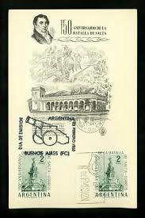 |
| eBay | 1939 Republica del Paraguay Paz Del Chaco 1938-21.VII-1939 Pesos 3 Postage Stamp | eBay | 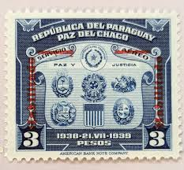 |
| Alamy | ARGENTINA - 1910 May 1: 50 centavos carmine and black postage stamp depicting 1st meeting of republican government, May 25, 1810. Centenary of the republic. Inscribed “1810 1910”. The May Revolution ousted | 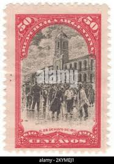 |
| eBay | ARGENTINA #1163 1977 40p HISTORIC CITY HALL MINT VF NH O.G | eBay | 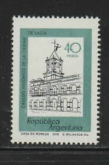 |
| Alejandro Zulleymán (alejomedicina) - Profile | Pinterest | ||
| eBay | URUGUAY C104 AIRMAIL MINT HINGED OG * NO FAULTS VERY FINE! - URN | eBay | 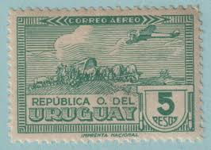 |
| eBay | Uruguay Stamps / 1949 Air Mail /100 years of Montevideo University /Brown Used | eBay | 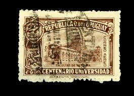 |
| eBay | URUGUAY 609 - Cultural Heritage "Legislature Building" (pf2025) | eBay | 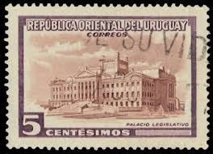 |
| eBay | DN) Paraguay 100 Guaranies 1952 P-189b UNC | eBay | 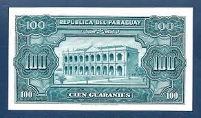 |
| Todocolección | sello argentina. temas nacionales (1954-1959) - Buy Antique stamps of Argentina on todocoleccion | 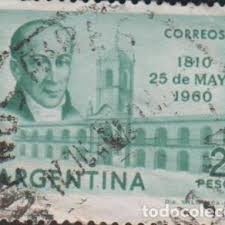 |
| Filatelia Argüello | VARIETY: “MUESTRA” OVERPRINT – Filatelia Argüello | 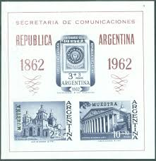 |
| eBay | PARAUGUAY, 1813, PROOF, CARD BOARD PAPER | eBay | 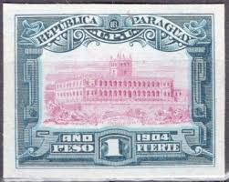 |
| Wayground | ORGANIZACION POLITICA Y ECONOMICA COLONIAL Quiz | |
| eBay | Uruguay Aérian Post MH N°96 Mint | |
| eBay | Argentina Proof Scott #478 2 Block x 4 On Satin Paper Colour Approved & Not Appr | eBay | |
| eBay | POET ROBERT FROST 1526 RARE SET OF 4 FDCs & HISTORIC R FROST ILUSTRATED SHEET | eBay | |
| Shutterstock | Argentina 1910 May 1 50 Centavos Stock Photo 2406625561 | Shutterstock | |
| eBay | Uruguay #554-555 Coat of Arms Latin America Overprint Postage Stamps Used | eBay | |
| eBay | Uruguay, Scott 549 ** 554 in MH Condition | eBay |
.jpg){kind=link}